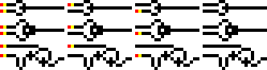
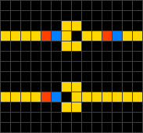

Wireworld é um autômato celular. Os Electrons são propagados ao longo dos fios em cada ciclo. Apesar de sua simplicidade, permite simular computadores avançados e é Turing completo.
■ Clique com o botão esquerdo para colocar um fio condutor. (por padrão).
■ Clique com o botão direito para colocar um electron.
■ Clique com o botão do meio para apagar um item.
■ Segurar CTRL e passar o mouse por cima de um item irá apagá-lo.
■ Use as setas do teclado para mover a câmera.
■ Os botões Conductor, Electron e Empty alteram o comportamento padrão do botão esquerdo.
■ O botão Clear Grid limpa a grid por completo.
■ O botão Start Simulation iniciará a animação. Pressione ele novamente para pausar.
Uma célula Wireworld pode estar em um dos quatro estados diferentes: Empty, Electron Head, Electron Tail e Conductor.
Como em todos os autômatos celulares, o tempo avança em etapas discretas chamadas gerações. As células se comportam da seguinte forma:
■ Empty → Empty
■ Electron Head → Electron Tail
■ Electron Tail → Conductor
■ Conductor:
● Electron Head se uma ou duas das células vizinhas são electron head.
● Caso contrário, permance Conductor.
Nas regras acima, vizinho significa uma célula de distância em qualquer direção, tanto ortogonal quanto diagonal.
Com este conhecimento podemos construir portas lógicas, recebendo sinais de entrada e realizando uma operação lógica.
Computações básicas: Funções "OR", "XOR" e "AND".
Diodos: se o electron vier do lado dos três blocos ele passa, caso contrário é interrompido.
